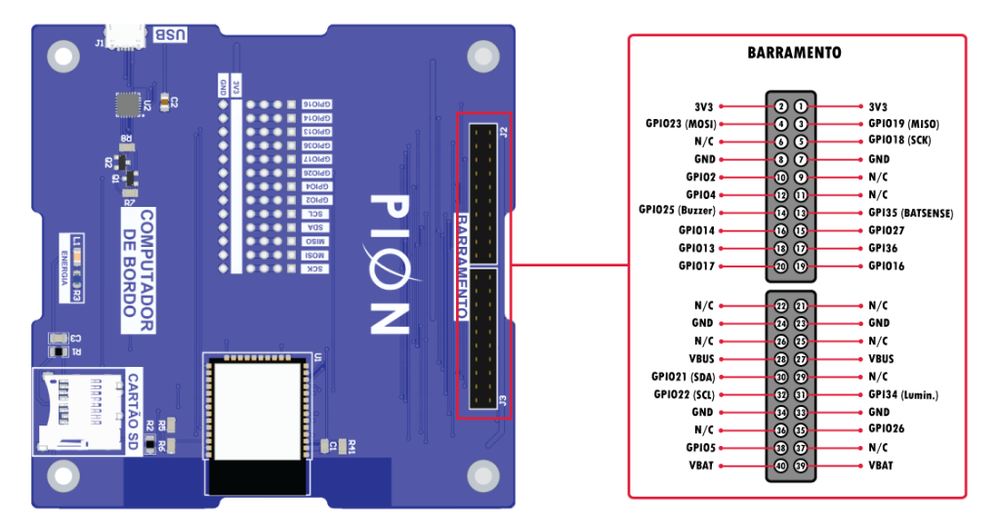
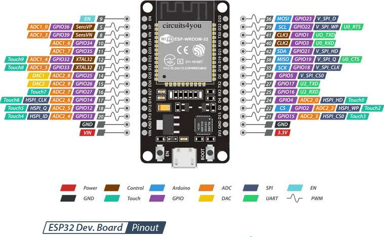

[SISTEMA] SatBlocks Ground Station pronta. # Conecte seu satélite via USB Serial ou Bluetooth para iniciar a comunicação ao vivo.

Adicione novos gráficos Chart.js em tempo real ou carregue os sensores padrão da missão OBSAT 2026.

Escolha o canal de comunicação para enviar código e telemetria
Conexão direta de alta velocidade via Web Serial (CP2102, CH340, FTDI).
Comunicação sem cabos via Web Bluetooth para satélites em bancada.
Conexão via WebSocket para CubeSats em rede local.
Programas prontos das Oficinas 1 e 2, telemetria de voo e missões avançadas